Engineering Notebook
Tigran's Website
This is my reciepe for Hamburger
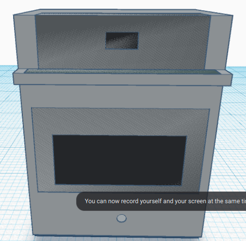
Hello, we learnt the basic stuff about this programm today.
Hello, this week I refreshed my tinkercad knowledge and made a stove which was our challange for Thursday.
Hello, this week we worked on our TinkerCad again and we should soon begin to work on our project IRL.
This is the Ducktators link, I find it funny how the US made fun of the axis powers even during the war..
Dr. Livessey from the Treasure Island walking..
There are three Hyenas behind me. They even laugh like those three Hyenas from the Lion King.
This week we began to work on our project but it ended up to be dissapoitment. We do not have enough materials to support our ideas for our pronject. We can even make a ramp and we don't even know how we will pop the baloon since we don't have enough materials to do that. But luckily we finished our project and it went well and popped from the first try which is very good.
This is our live picture of the project AND the video.
This is our R Machine Video.
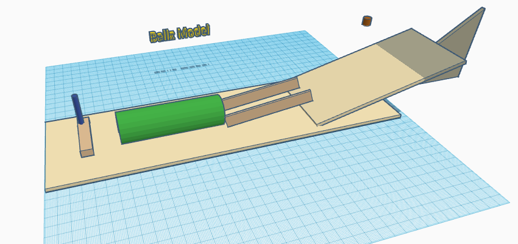
Machine Project.
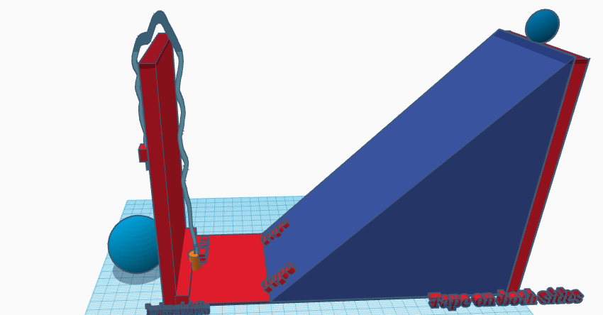
My Cad.
The best villain death in movie/animation history!
VIDEO
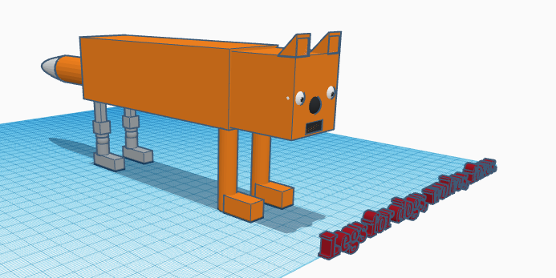
This week we made an animal phostetic, I chose leg and made a phostetic for a fox since we could not use cats dogs or other simple animals. I chose fox because it is one of my favorite animals and because it was not hard to make a leg for a fox that looks like form Minecraft.
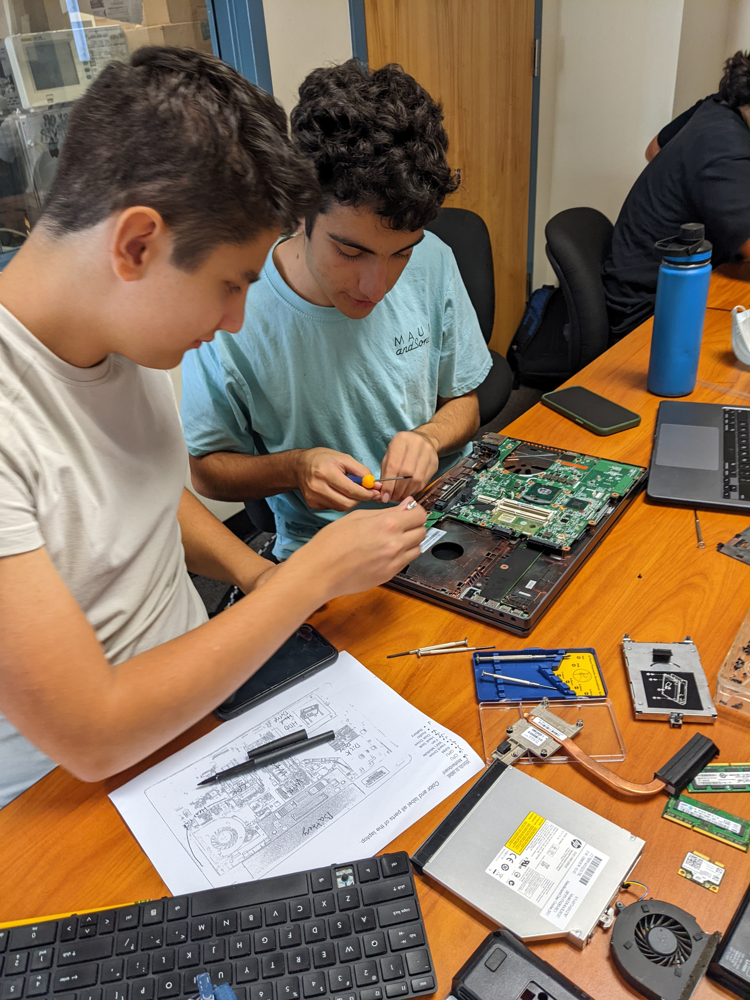
Our Laptop.
This week we learnt about computer engineering, we rebuilt a laptop but during the process we also studied what is inisde. We found where CPU and GPU is, where the ram and storage is and etc. After finishing we rebuilt everything the way it was. It was very fun and interesting.
This week we built our rocket project prototype inside CAD. And not only this, we also learnt about aerospace engineering which is my favorite type of engineering. Next week we will make our actual rocket which will be fun since we will actually launch it by using water inside a bottle and adding pressure to it so it works as thrust for our rocket.
This week we finally built the rocket from carboard, two liter bottle, and paper. I was confident it will work but it did not and instead it just fell and started to spin while spiting out water at all ways hahaha!
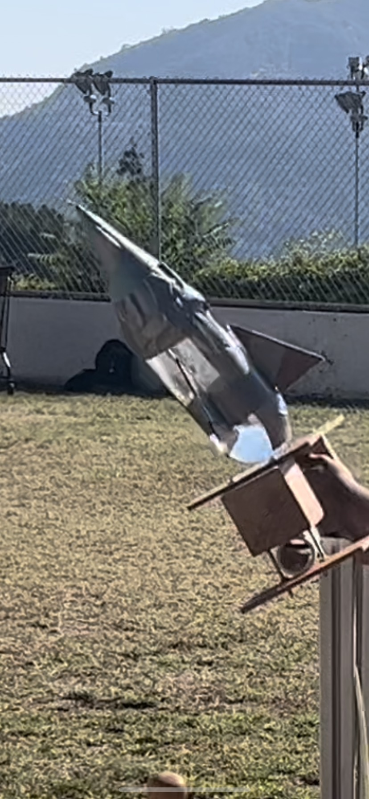
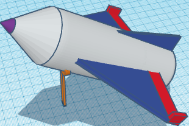
This week we were doing e. engineering. Especially about water filtering and waste treatment. We also buit a bottle with different rocks, sand and cotton in order to to clean the water. What we gto from black water was wonderful and pure water that was drinkable if you boiled it. I find it a good result.
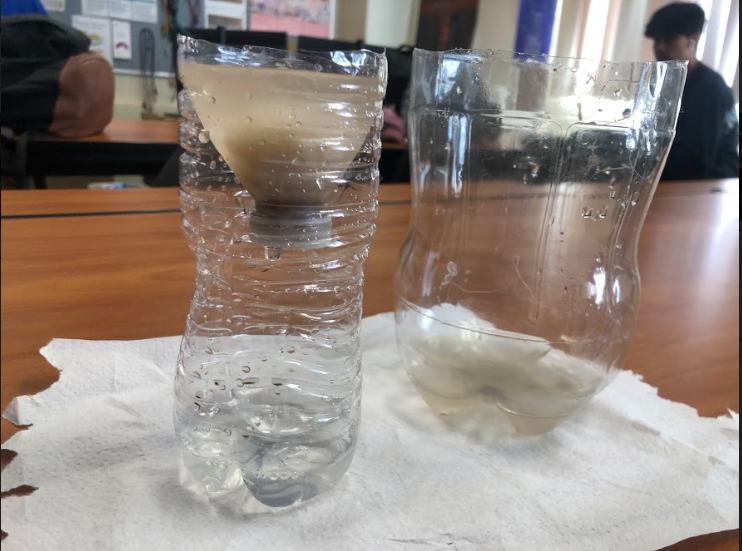
This week we are doing Electrical Engineering. We are currently doing things in TinkerCad, next week we should begin to do thing sin real life. We will have three weeks of this.
We got our hands on actual breadboards and made many patterns with LEDs. THe resistors were used to limit the voltage in order to prevent LEDs from exploding.
This week we made patterns on the breadboards which was pretty fun. We started from the simple things like one LED flashing at once to multiple at once and to multiple in a pattern. Patterns were differing from each other by speed and order but the last one reminded christmas tree lights which did look good. Here is a video of the pattern flashing.
This week we begun Civil Engineering, Obi Wan comes to the mind every time I hear this hahaha. So, this week we begun to build a bridge out of spagetti, I call them "pasghetti" because it sounds better for me. We were gluing on Thursday of 12/1, today on Friday, we broke two of the glues, well I broke it by an accident. We need three anyways since our bridge is going to be a triangle shaped because it feels safer and because we will have mroe materials for the support inside it which is good for bridges.
We are done with our bridge project. We only got three versions at the end due to limited time. The most simple one which is just a flat bridge was the most effective because it got the highest score whcih is 34 to be exact. Other ones were good too but they broke easily. Maudy's bridge could handle more weight than Lyza's but it was heavier soit was less effective. Brandon helped everyone so we were a successful group. The only problem we had is that spagetti was hard to get off the paper on which we glued it which caused cracks and even broken bridge. Unfortunately.
1/13 This week we were learning about marketing and business in engineering, we are currently working on a slideshow which has to convience investors invest money into our "product", it doesn't really exist it's just like roleplaying to get experience for the future in case we make business and search for investors
Presentation
1/19/23 This week we focused on presentations and did not learn new things except skils of trading and making deals with investors, but it was very fun tho.
So we are done with business engineering.
1/27/23 This week we were doing Chemcial Engineering and to be exact only for two days. On Wednsday we were introduced to our first quarter project which is making something based on the type of engineering you choose. I chose electrical engineering which is pretty interesting. Right now working on the BOM inside the document where we have to write down our plan about the project.
2/3: This week we were designing our projects in TinkerCad, we needed to try and make an exact copy of the project. The problem with mine is that I have many parts that were not the copy of my project I want to make. There wasn't really a base in TinkerCad for breadboard mode so I got everything that was either the part I need or similar tot he part. This is what I managed to make in TinkerCad (There is waaaay more in the actual project that I will make)
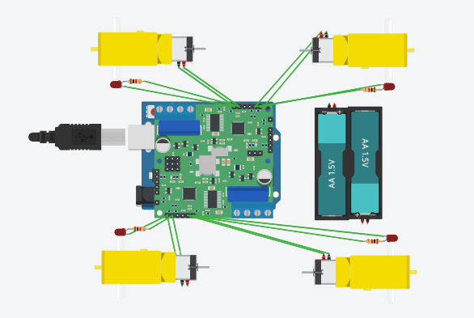
2/10 This week I begun the construction of my project, so far I got the base and the motors (wheels too). Next week I will work on finishing it up and the week after will begin to code the car. Back wheels are CD disks and the front are wheels with motors so they will help to move and turn the control the car. For challenge day, we had to make a structure that will carry a small water balloon safely to its destination, we tried to make it something like a basketball net and it was kind of working, we dropped the balloon few times but it did not pop.
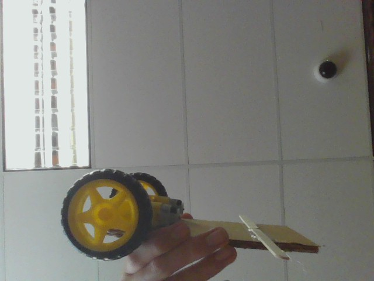
The Challenge Day Document
2/17/2023. This week we were working on our projects, even tho I was absent for 2 days and only had Thursday and Friday to work on the project, I did do descent work over the short time I had. I forgot to take a picture of what I did but its base is pretty much done. I only need to make the motor controling system and add bluethoot module so that I can control it from phone at the end when it's done.
2/26/23. This week we were working on our projects. I redesigned and reconstructed my project but I still need to get the motors working the way I need them and for some reason my arduino uno just won't connect to the computer so my goal is to finish the project on Wednsday. As for now I was absent on Friday so I missed on day of working which is unfortuante.
3/3/23. Yup, as expected, I did not finish the project on time therefore it was not ready and there are no results. But the building was interesting even though it was very frustrating when it just did not work or something broke. I missed a week in total therefore had way less time to work on the project which probably affected the process. I had to change the way how the car was going to look because the prevois version did not work and I also had problems with my arduino that refused to connect. At the end my motors confused me because they refused to work. I accepted that I failed and moved on. Next project will hopefully be in big groups because I like working with people since it's first of all motivating and fun. It was too borng doing things alone. Lesson learned. Also for some reason my pictures won't load no matter if it's jpg or png so I will need your help Mr Poole.
//4th QUARTER
3/24 Update: I had a great spring break, I went to California Science Center to see the Endavour Space Shuttle, I hope I got it right. It was amazing and it was so cool to see it in real life and see its true size. I tried few simulators too just because why not. This week we are starting a new project thankfully in groups of three, our goal for the project is to drop the egg from 3rd floor and make a structure that will deliver the egg to the ground safely. We can do anything, starting from parachutes to super soft walls inside a box for the egg. I can't believe how I missed the website update list of things that I needed to have on my website. Such horrible thing, not even talking about how I was thinking I had A because all this months I was checking my grade in 1st semester. Just hoping to get the grade up to B...
The document for simulations
The site for simulations
//AFTER EGG DROP AND WEBSITE 2.0
AFTER EGG DROP AND WEBSITE 2.0
This week we were building our project of Eggdrop, we got three balloons and two bags united as one to slow down the fall. Unfortunately the egg fell on its side so it met the ground first instead of the carboard with cotton balls meant to slow it down. The center of mass was way too the side.
So, this week we spent our time on Cading our new project which will be the boat project, yes finally! We got few prototypes that was are willing to test in week 2. Here is a picture of our CADs. So, turns out all our websites were lost but LUCKY US! We had backups in GitHub and thanks to our token we were able to transfer all the code into here which is very nice. Today is indeed a good friday because its just a good day. Sunny, warm but not hot. Also the week went good for me, nothing bad happened and I even did some things that I wanted to do for a long time.
Last week we just finished our Egg Drop, ours was the unlucky one because the structure landed right on the egg side so the egg met the ground first therefore cracked.
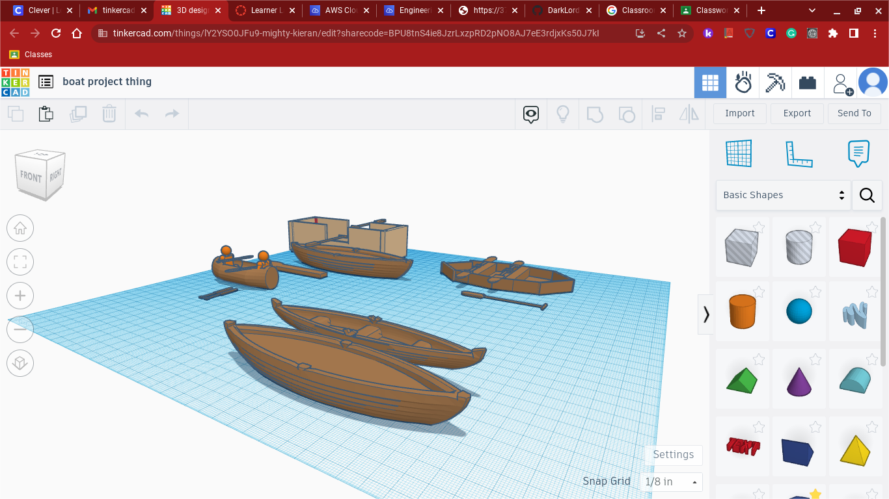
//AFTER WEEK 1 OF BOAT PROJECT AKA MR. POOL
Friday, April 14th, website udate:
This week we we working on our Boat Project prototype and we are done with it, we chose this type of a boat because we want it to be flat so it does not tilt much and because it's not too complicated and does not require much material but we actually need more weight beause it turns out that we will float so high that we can easily flip which is not good so we added a special anti-sinking system which is made of rolled cardboard under the place where we will sit because when it starts to sink the water will get in way slower than without the system and also it will keep some weight so we will go a big more into the water and will have a better stability.
Here is a picture of our prototype
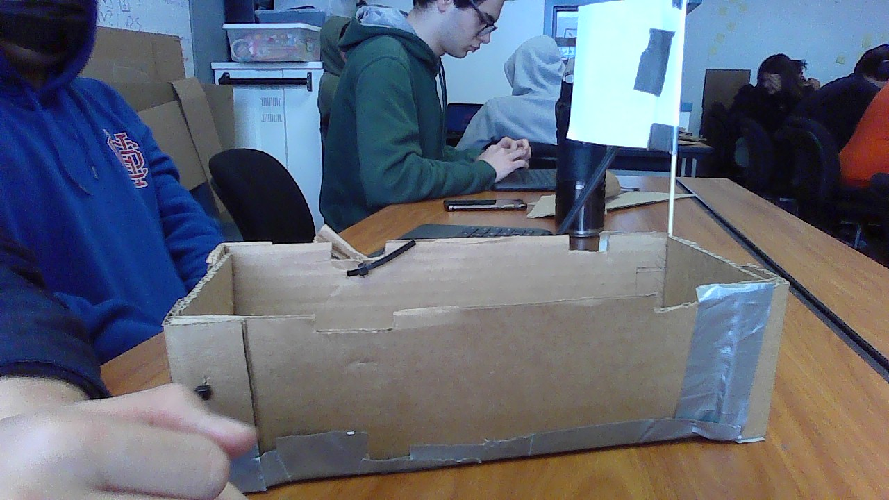
This is a video of the testing of our prototype for the boat, the are where we tested our protoytpe is 13 feet deep, we used bricks for the cargo to see how much our prototype will handle, and it is small because it's a prototype and the actual boat is meant to have more weight and area so we did not want to waste too much for a prototype. Unfortunately the boat is not good enough in stability so it began to tilt and got water in it which resulted in it sinking in few seconds. It could handle 12 pounds but was very unstable so now we have to make the actual boat way more stable so that we don't sink.
This week we began to build the actual boat because the use from prototypes is absolute zero if it is built from cardboard and is designed for hydrodynamics. Because cardboard is basically a better paper and a very strong one but it is still paper so it can easily get wet but anyways. We designed to have multiple sectors on the boat, we designed multiple layers to slow down the sinking of the boat so that we can reach the one end and come back to the other end which is the main goal defining the good grade. So, we have the materials ready, what can go wrong? Well, it turns out that our boat for some reason is considered too small because there are people who built a boat five times bigger. WHY ON EARTH YOU NEED THAT BIG OF A BOAT? So, my teamates decided to make the boat bigger when I was absent due to cold. It's interesting how I did not get sick for months but now I got sick probably 5 times this year already which is super annoying because I missed some things in thsi class which affected my grade. I hate when people go too far than they are asked especially when it can affect the "normal", this happened in coding class too when some people finished all the labs whie we were like at lab 10 which caused the avg for A to increase making it hard for us to get A. It is a horrible way of grading. But here is a photo of our boat materials, we will obviously add more.
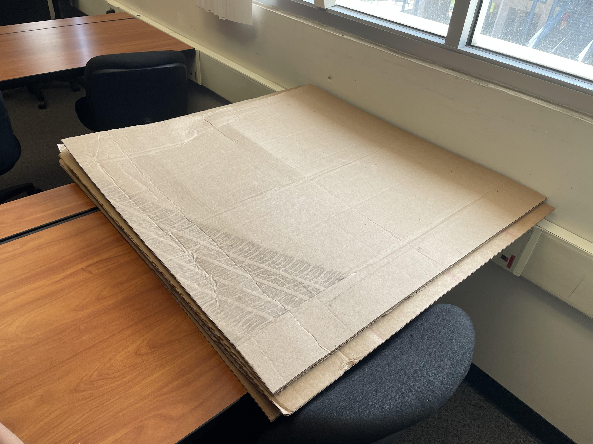